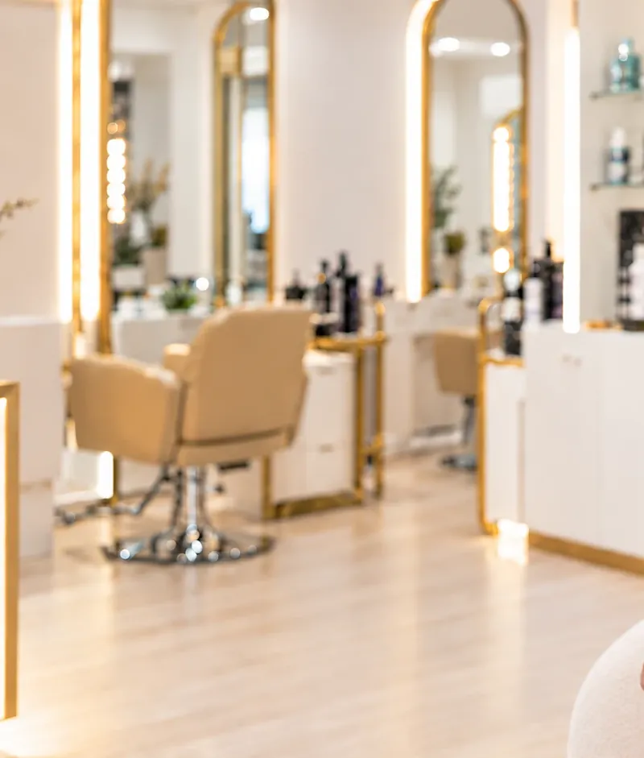

Serviços
Cor, cuidado e acabamento
Cada serviço começa com um diagnóstico. O preço final depende do comprimento, da densidade e do ponto de partida do teu cabelo.
- Sob consulta
Balayage
Iluminação pintada à mão, natural e de crescimento suave.
- Sob consulta
Loiros
Loiro bege, loiro claro e loiro mel, com matização personalizada.
- Sob consulta
Morenos iluminados
Chocolate, caramelo e avelã com reflexos subtis.
- Sob consulta
Madeixas A confirmar
Técnica clássica de papel ou touca, para mais luz em menos tempo.
- Sob consulta
Coloração global A confirmar
Cobertura de brancos e mudança de tom com acabamento brilhante.
- Sob consulta
Gloss e matização
Renova o tom e o brilho entre marcações de cor.
- Sob consulta
Alisamento vegan A confirmar
Reduz o volume e o frizz com uma fórmula de origem vegetal.
- Sob consulta
Hidratação profunda
Devolve maciez e brilho a cabelos secos ou sensibilizados.
- Sob consulta
Reconstrução A confirmar
Repõe a força de cabelos que passaram por descoloração ou calor.
- Sob consulta
Cronograma capilar A confirmar
Plano de tratamentos em casa e no salão ao longo de semanas.
- Sob consulta
Corte feminino A confirmar
Pensado para o teu rosto, a tua textura e o teu dia a dia.
- Sob consulta
Brushing e ondulados A confirmar
Liso polido ou ondas soltas para sair do salão pronta.
- Sob consulta
Penteados de cerimónia A confirmar
Noivas, madrinhas e convidadas, com prova prévia.
Valores sob consulta, após diagnóstico gratuito. A confirmar

A nossa assinatura
Balayage à medida
É o serviço pelo qual somos mais procuradas. Explicamos tudo sobre a técnica, para quem é indicada e como mantê-la.
Saber mais sobre balayageA tua história tem todo o valor.
Não sabes que serviço escolher?
Envia uma fotografia do teu cabelo e diz-nos o que procuras. Ajudamos-te a decidir.
Marcar pelo WhatsApp